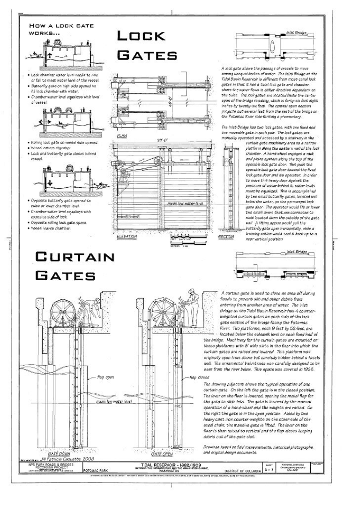

1
Infrastructure

After a flood in 1881, the Army Corps of Engineers dredged the Potomac River and used sediment from the Washington Channel shipping canal to fill in the tidal.

It was designed so that at high tide, the gates open and fill the basin with water.

Kutz Memorial Bridge, which carries Independence Avenue across the Tidal Basin, was designed by Paul Cret and completed in 1943. Archie Alphonso Alexander, African American engineer, built the bridge with his partner Maurice Repass.

The pair hired both African American and white laborers and refused to racially segregate the work site.

After a flood in 1881, the Army Corps of Engineers dredged the Potomac River and used sediment from the Washington Channel shipping canal to fill in the tidal.

It was designed so that at high tide, the gates open and fill the basin with water.
After a flood in 1881, the Army Corps of Engineers dredged the Potomac River and used sediment from the Washington Channel shipping canal to fill in the tidal wetlands. Six years later, in 1887, engineers installed gates at the entrance and exit of a new pond (now the Tidal Basin). It was designed so that at high tide, the gates open and fill the basin with water. At low tide, the water exits into the Washington Channel, and the rush of exiting water sweeps the leftover sediment away.
Kutz Memorial Bridge, which carries Independence Avenue across the Tidal Basin, was designed by Paul Cret and completed in 1943. Archie Alphonso Alexander, African American engineer, built the bridge with his partner Maurice Repass. The pair hired both African American and white laborers and refused to racially segregate the work site.
2
Public Space
and Recreation
The engineering effort resulted in the creation of over 621 acres of reclaimed land from dredged materials and fill—including the 118-acre Tidal Basin and the creation of a seawall to protect the reclaimed land from erosion. In 1897, Congress designated these lands as Potomac Park to be used for the “recreation and pleasure of the people” with drives, bridle paths, swimming and boating facilities, and a bandstand.
Winter Festivities: January 17, 1912 basin transformed into a “fairyland of twinkling lights” and 1934 holly trees planted to provide red berries in winter
Swan Boats: June 15, 1926 first motorized swan boats arrive, different versions exist today.
Tidal Basin Bathing Beach Battles: free beach where Jefferson Memorial is now located opens in 1918. Only whites allowed; by 1922, Congress appropriates money to build African American beach, but it does not materialize. Beach closed by Congress by 1925 due to mixture of public health concerns and racism.
Swan Boats: June 15, 1926 first motorized swan boats arrive, different versions exist today.
Tidal Basin Bathing Beach Battles: free beach where Jefferson Memorial is now located opens in 1918. Only whites allowed; by 1922, Congress appropriates money to build African American beach, but it does not materialize. Beach closed by Congress by 1925 due to mixture of public health concerns and racism.
Fishing: In 1925, Tidal Basin best place to fish in DC. That year, US Bureau of Fisheries stocks it with fish. Unlike beach, both black and white people can fish. Pollution results in problems and by 1970 signs appear that alert people that fish are contaminated. Since the passage of the Clean Water Act of 1972, water is cleaner and fishing is again permitted.